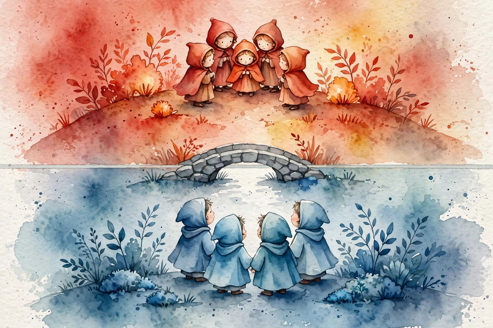

You Are Not So Smart · Episode 122 · Interactive Companion
Tribal Psychology: The Party Brain
Lilliana Mason and Dan Kahan on partisanship as social identity, motivated reasoning as a feature of the mind, and the myth of the golden age of truth.
← Track index · Episode chapter →

Illustration. Watercolor-style image generated for this page. Two crowds face each other across a line, each side painted in a different shade. Not a photograph.
The Wisdom Index: every nugget in this companion
Part 1
The Dots
SOURCEHenri Tajfel flashed 40 dots on a screen for half a second, then sorted strangers into groups by whether they overestimated or underestimated the count. Minutes later, these strangers, grouped by a coin toss, got to split money between the groups. They chose $4 for their group and $3 for the other over $5 for everyone. They paid a dollar of their group's welfare to widen the gap. Tajfel repeated it with paintings, with random group numbers, with everything. Same result.
SOURCEThe minimal group paradigm: humans form groups over anything, then immediately favor us and punish them. No history, no grievance, no real difference. The label alone is enough. This sits at the bottom of the episode's whole argument. Party is not a set of policy views. Party is a tribe.
INTERPRETATIONThe reader's test: list three groups you belong to that feel identity level. For each, name one opinion you hold that the group would expel you for changing. The list is your minimal group.
Nugget
The dots
What happened. SOURCEStrangers sorted by a coin toss paid money to hurt the other group. No grievance, no stakes, no history.
Why it matters. INTERPRETATIONFavoritism needs no cause. Any label will do. Your team memberships run the same machinery.
The principle. INTERPRETATIONWatch for the group before the grievance. The label creates the loyalty. The reasons arrive later.
Part 2
The Mega-Identity
SOURCELilliana Mason's argument: party fused with race, religion, region, and culture into a single mega-identity. Her Pew numbers: 92 percent of Republicans sit to the right of the median Democrat, and 94 percent of Democrats sit to the left of the median Republican. The medians that nearly touched in 1994 had split apart by 2014. About 20 percent are hardcore enough to say they would never vote for anyone backing an idea from the other side. 27 percent of Democrats call the Republican Party a threat to the nation's well-being. 36 percent of Republicans say the same about Democrats.
The sorted party, 2014
Hover any bar for detail. The medians nearly touched in 1994.
Source: Pew data via Mason in the ep122 interviews. Original toy chart built from episode claims.
SOURCEPeople do not want to marry across the line or live near it. The mega-identity means losing an election no longer means losing a policy debate. It means your team lost, with all of identity on the line. And the most active people, the most engaged, the ones in the most contact with politics, are the most hostile and the most misinformed. Contact with politics is not the cure. It is the accelerant.
INTERPRETATIONWhen a policy dispute feels existential, ask whether the policy is at stake or the identity. The fury usually answers before you do.
Nugget
The mega-identity
What happened. SOURCEParty fused with everything else. Elections became identity contests. The engaged are the most misinformed.
Why it matters. INTERPRETATIONMore information will not fix a tribe. The tribe filters the information.
The principle. INTERPRETATIONSeparate the policy from the team before you argue either one.
Part 3
The Weapon
SOURCEDan Kahan's central finding: reasoning does not sit above identity. It serves it. People with more scientific literacy and numeracy are not more likely to agree with the evidence. On contested issues, they are more polarized, because better tools build better defenses. The mind's job is identity protection, and a sharper mind protects better. What looks like a failure of reason is a success of tribal defense.
SOURCEThe Dartmouth and Princeton experiment is the classic: students of both schools watched a film of their violent football game minutes earlier. Ninety percent of Dartmouth students said Princeton started it. Princeton students marked half as many infractions as Dartmouth did. Same film, same events, two realities. Memory was not the issue. The viewing happened minutes before. Construction was.
SOURCEKahan refuses the exemption everyone wants. In his words, “We all think we have these very logical thought processes,” and then the identity defenses run exactly the same in the lab. The smartest people in the room are the most defended, not the least.
I am the problem. You are the problem. We all do this.
Kahan's self-indictment, in the episode
INTERPRETATIONThe reader's move is Kahan's own: catch one belief of yours that survives because it is yours, then ask what your sharper tools did for it.
Nugget
Identity-protective cognition
What happened. SOURCESmarter minds polarize more. Reason defends the tribe.
Why it matters. INTERPRETATIONEducation is not the fix. It is a better weapon in the same war.
The principle. INTERPRETATIONDistrust your own certainty first. It is the most defended asset in the room.
Part 4
The Pollution
SOURCEGeoffrey Cohen's experiment, Mason's favorite ever conducted: give people a welfare policy position, but vary experimentally which party supposedly holds it. Subjects' positions flip with the label, all the way across the policy spectrum, a 100 percent move. Then ask them why they hold the position. They do not say because my party does. They invent reasons. The position was rented from the tribe. The justification was manufactured after delivery.
The welfare flip
Hover any bar for detail. Only the label changed. Everything followed.
Source: Cohen experiment via Mason in the ep122 interviews. Original toy chart built from episode claims. Bar heights are direction only: the source reports a full-spectrum move, not measured values.
SOURCEKahan's case study in issue pollution: the HPV vaccine versus the HBV (hepatitis B) vaccine. Both prevent sexually transmitted infections. Both are given similarly. The numbers for HPV: up to 75 percent of sexually active people in their twenties and early thirties encountered it. It is essentially the sole cause of cervical cancer, which kills about 3,000 US women a year. Acceptance runs about 95 percent for each vaccine. The controversy is not in the uptake. It is in the identity overlay poured on top.
SOURCELate 2016: Oxford named post-truth the word of the year after a 2,000 percent usage spike around Brexit and the US election. The Washington Post lamented that truth was dead. Kahan's dry response: he would like to know when this supposed truth era ran. The dread is real. The golden age is invented. We were always motivated reasoners. The Comey hearing did not create the split. It revealed it.
INTERPRETATIONThe test for any controversy you meet: separate the uptake from the overlay. 95 percent acceptance plus a screaming debate means the fight is about identity, not the thing.
Nugget
The myth of the golden age
What happened. SOURCEPost-truth spiked 2,000 percent as a phrase. The reasoned era it mourns never existed.
Why it matters. INTERPRETATIONNostalgia is a bad baseline. You cannot restore what was never there.
The principle. INTERPRETATIONDemand the uptake numbers before the debate. The fight is usually about the overlay.